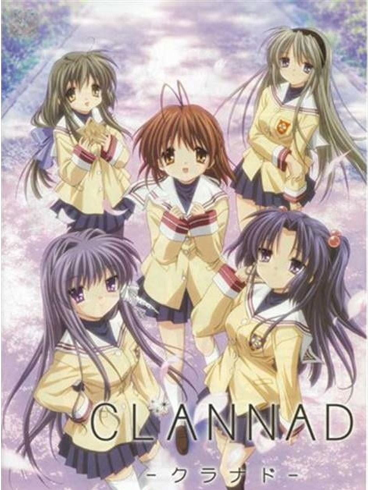
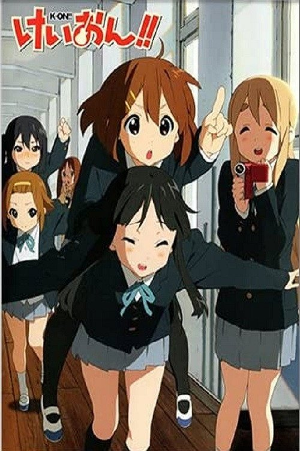
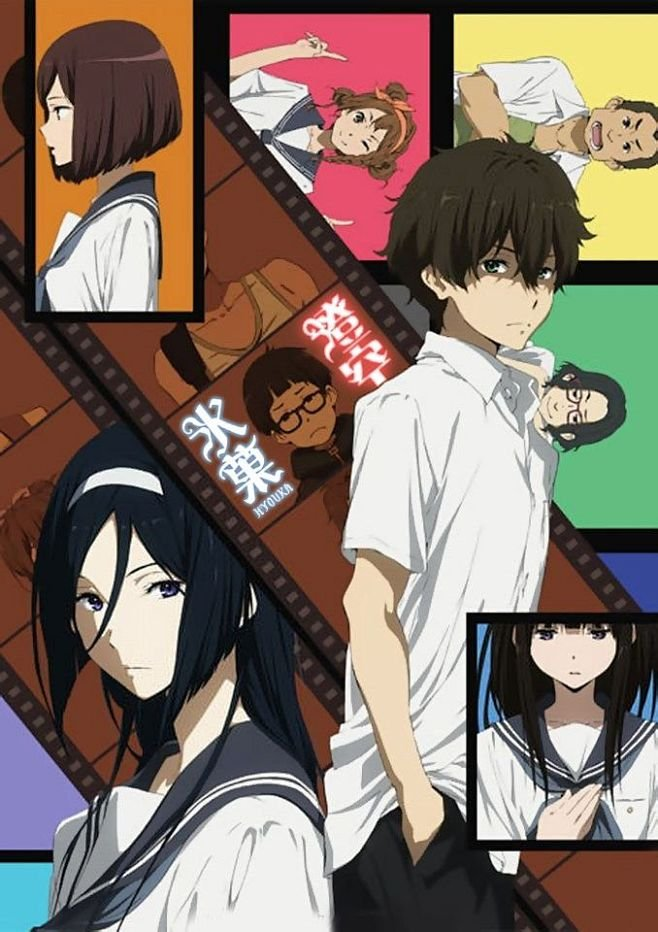
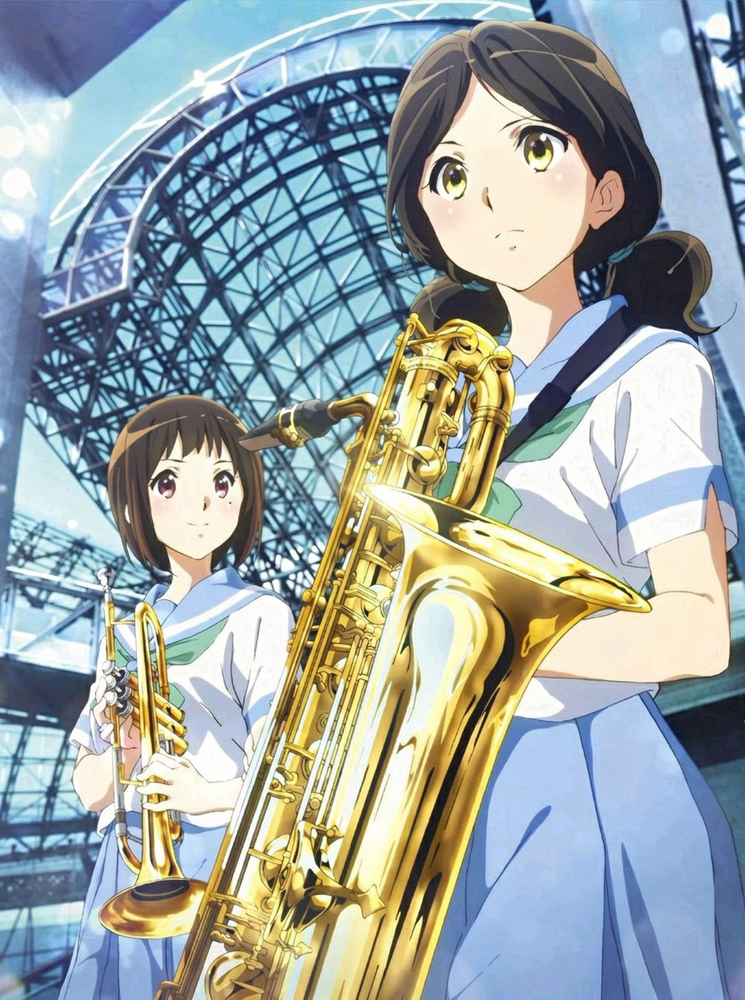
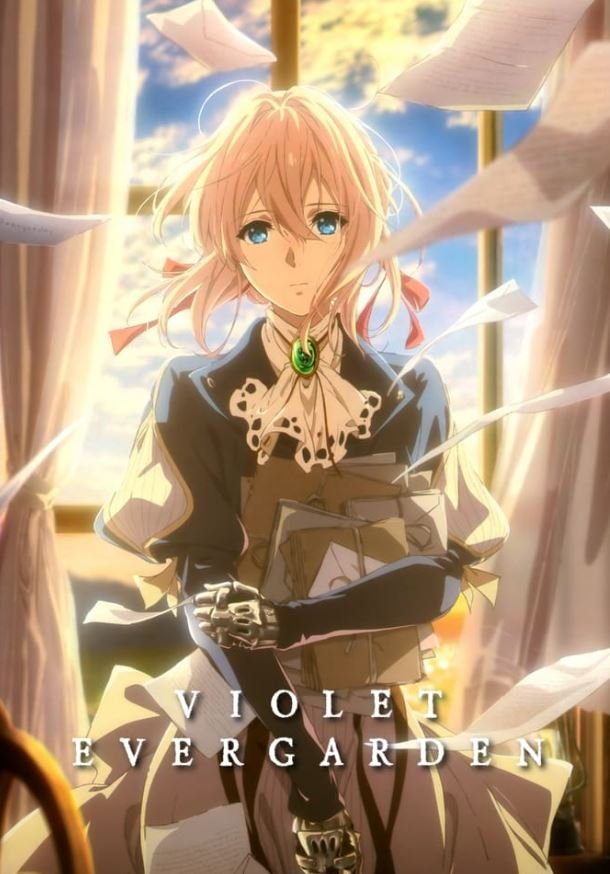

主要动画作品
从 2006 年到 2018 年，这里选出八部最能代表京阿尼的作品： 有把世界当玩具的少女，也有在樱花坡道下等待的少女；有放学后的乐队，也有战争结束后学着写“爱”的人。
 2006
2006
凉宫春日的忧郁
涼宮ハルヒの憂鬱 / The Melancholy of Haruhi Suzumiya
少女把外星人、未来人和超能力者拉进社团，世界随她的心情悄悄改变。
作品详解
2007CLANNAD
CLANNAD -クラナド- / 2007—2009
不良少年在樱花坡道遇见渚，一起重建戏剧部，也一起面对家庭与生死。
作品详解
2009轻音少女
けいおん！ / K-ON!
五名少女在即将废部的轻音部里组乐队，把放学后的音乐教室过成了青春。
作品详解
2012冰菓
氷菓 / HYOUKA
节能少年被拉进古典部，跟着总说“我很好奇”的少女，解开校园里的旧谜。
作品详解 2012
2012
中二病也要谈恋爱！
中二病でも恋がしたい！ / Love, Chunibyo & Other Delusions
想埋葬黑历史的男生，遇到现役中二病少女，被迫签下同居的“契约”。
作品详解
2015吹响！上低音号
響け！ユーフォニアム / Sound! Euphonium
弱小的吹奏乐部以全国大赛为目标，久美子重新拿起上低音号，和同伴一起向前。
作品详解 2016
2016
声之形
聲の形 / A Silent Voice
曾欺凌听障少女的少年，多年后学着手语，想把伤害过的人一一见回来。
作品详解
2018紫罗兰永恒花园
ヴァイオレット・エヴァーガーデン / Violet Evergarden
战争结束后，被当作武器的少女成为代笔人偶，在别人的信里学会“爱”。
作品详解说明：以上八部为本站选出的代表作，按电视动画或剧场版的首播年份排列。 京阿尼的作品远不止这些，《日常》《玉子市场》《Free!》《境界的彼方》《小林家的龙女仆》《莉兹与青鸟》等也都值得单独一看。